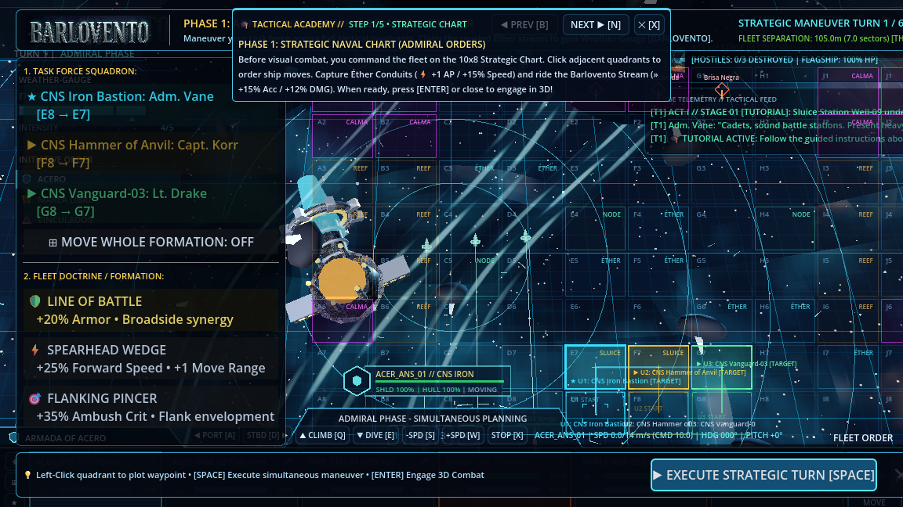

Phase 1 • 10×8 Strategic Chart
The Approach (Admiral Phase)
Plot fleet waypoints across 80 quadrants (A1–J8). Contest Éther Conduits (⚡ +1 AP / +15% Speed), surf Barlovento streams (» +15% Acc / +12% DMG), and execute tactical formations while following the 5-step Tactical Academy guide.